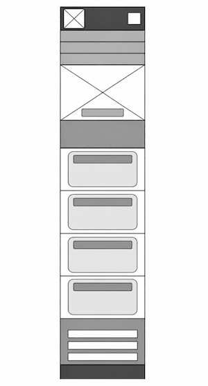
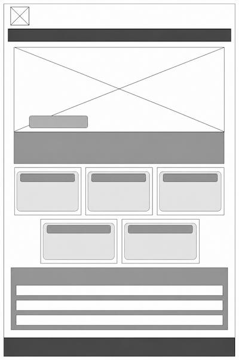

Site Name
Your Way Into Family History
I chose this name because there is not just one way to participate in family history. Everyone has different interests, talents, and amounts of time available. This website will help visitors discover meaningful ways they can contribute.
Site Purpose
This website encourages people to participate in family history by showing simple ways to get involved. Visitors will learn why family history matters, discover activities that can be completed in just a few minutes, and understand how these efforts help preserve families and prepare names for temple ordinances.
Scenarios
- Why is family history important?
- I only have 10 minutes. Is there something meaningful I can do?
- How do I know where to start?
- How does family history connect to temple work?
Color Scheme
Primary
#255D6B
Secondary
#356060
Background
#F6F4EF
Accent
#773585
Dark Accent
#602972
Heading
#411B52
- Primary (#255D6B): Header, navigation, and links.
- Secondary (#356060): Borders and decorative accents.
- Background (#F6F4EF): Main page background.
- Accent (#773585): Buttons and call-to-action sections.
- Dark Accent (#602972): Button hover effects.
- Heading (#411B52): Headings and footer.
Typography
- Poppins - Headings
- Open Sans - Body text
Wireframes
Mobile View

Desktop View
